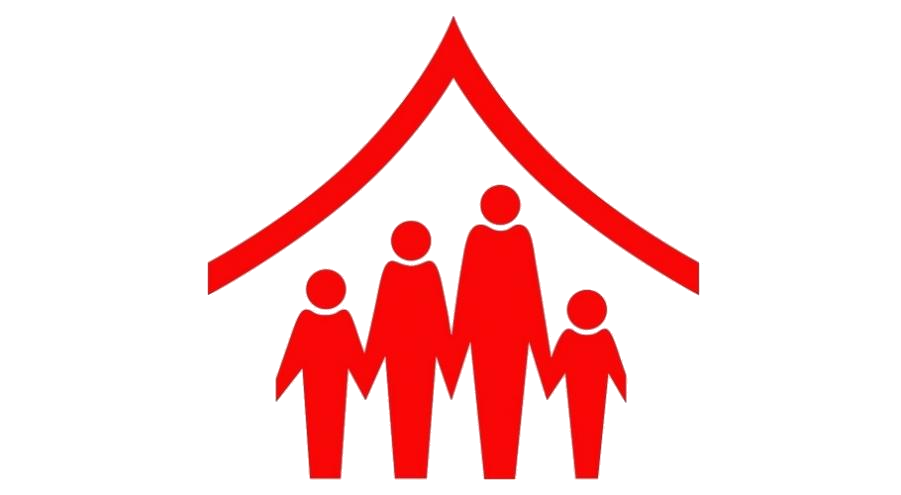
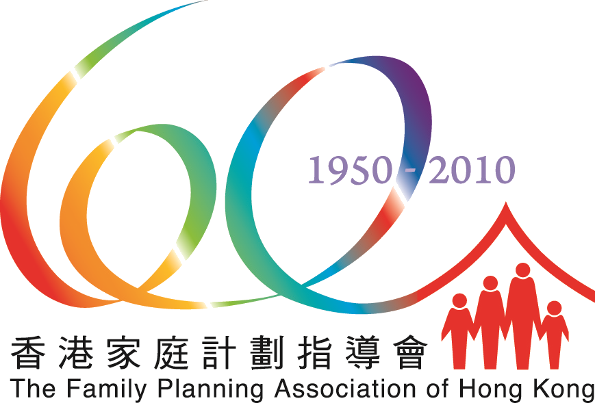

FAMPLAN · New Marketing Campaign to Promote Childbearing
🏠📸 Visual 素材（45 個：LOGO 3、視覺參考 23、新聞配圖 8、海報/單張 6、宣傳片 5）
搵到嘅 LOGO／海報／單張／宣傳片／真實參考相，每個有原網址。剔相後揀：⭐首選＝呢張參考優先過其他；🔁重搜＝搵過好啲（e.g. logo 污糟）；🗑刪除＝搵錯即清。




委員會／agency 諗橋一定收呢批做底，必跟。
1. 背景同目的
* 背景：香港正面臨生育率持續下降及人口老齡化的顯著人口結構轉變。雖然 2024 年受「龍年效應」及政府推出的 20,000 港元新生嬰兒獎勵金帶動，出生人數微升 10.5% 至 36,700 人，但該數字仍為 1961 年以來的低位之一（p.4–5）。香港家庭計劃指導會（FPAHK）目前播放之電視宣傳短片（API）標語為「How Many is Enough?/幾個至夠數」，為配合香港特區政府鼓勵生育的政策，家計會提出全新宣傳企劃，包括製作全新的電視及電台 API（p.5）。
* 目的：
1. 鼓勵猶豫不決或猶豫未定的個人及夫婦對為人父母和家庭生活建立更正面的看法（p.5）。
2. 推動有意生育（更多）子女的夫婦及早規劃，並做出明智、自信的建構家庭決定（p.5）。
3. 啟發憧憬建立家庭的年輕夫婦將生育視為富有意義且充滿成就感的人生旅程（p.5）。
2. 目標受眾
* 主要受眾（Primary Target）：25–39 歲已婚或感情穩定的夫婦，且有意生育或對生育（更多）子女猶豫不決者（p.4）。
* 次要受眾（Secondary Target）：
* 20–24 歲憧憬建立家庭的年輕成年人（p.4）。
* 對家庭觀念具影響力的父母／祖父母（p.5）。
3. 傳意目標／核心訊息
宣傳策略分為三個推進層次（p.5–6）：
1. 認知（Awareness）：將為人父母呈現為充滿喜悅、富有意義及愛的象徵；鼓勵夫婦及早規劃生育（p.5）。
2. 互動（Engagement）：重塑對生育的觀念並破除常見誤解（p.6）：
* *「責任太大」*：強調人生苦甜參半，為人父母雖需付出與犧牲，但亦帶來深遠的回報與意義。
* *「高齡仍可受孕」*：教育公眾 35 歲後受孕成功率下降，以及流產與孕期併發症風險增加之事實。
* *「育兒等於母職」*：強化育兒為夫婦共同責任，鼓勵丈夫積極參與。
* *「養大一個小朋友要六百萬」*：以合理的財務規劃及忽視之家庭資源回應。
3. 行動（Conversion）：鼓勵夫婦在懷孕前尋求醫療諮詢，以優化健康狀況（p.6）。提供相關資源包括：婚前檢查、PREPARE 婚前輔導及婚前準備小組、孕前檢查、政府資助孕前健康服務、早孕檢查、不育服務、男性健康服務及性治療等（p.6）。
4. 影片／製作規格
* 電視 API（TV API）：
* 集數與版本：1 版本（p.7, p.23）。
* 長度：每首 30 秒（p.7, p.23）。
* 拍攝規格：首選 HDCAM、RED ONE 或同等格式；可視乎創意採用高解像度影片（HDV）或單反相機拍攝（p.7, p.23）。
* 輸出格式：檔案格式 16:9 (HD) XDCAM HD422 at 50Mbps in MXF，以及 HDCAM 磁帶格式（p.7, p.23）。
* 語言與字幕：廣東話版（配繁體中文書面語字幕）及英文版（配英文字幕）（p.7, p.23）。
* 配音：廣東話及英文旁白／對話配音員（英文版需盡量以英文表達）（p.12）。
* 音樂：首選尾期配樂／量身訂造音樂（tailor-made/post-scored music）（p.7, p.13）。
* 特別規格（網絡無障礙標準）：必須另行提供一份符合萬維網聯盟（W3C）《無障礙網頁內容指引》（WCAG）2.2 AA 級標準之網絡版 TV API（p.7–8, p.11）。另需提供 12 張劇照（JPEG）及可編輯源檔（p.7–8）。
* 電台 API（Radio API）：
* 集數與版本：1 版本（p.8, p.26）。
* 長度：每首 30 秒（p.8, p.26）。
* 語言與格式：廣東話、英文（需為獨白式 Monologue）、普通話（配音員宜取得國家語委普通話水平測試一級乙等或以上）（p.8, p.12, p.26）。另需提供符合 WCAG 2.2 AA 標準之電台文稿軟複本（p.11）。
5. 指定班底
* 名人／明星／Talents 要求：若宣傳企劃或 API 邀請名人、明星或 Talents 參演，承包商需負責聯繫並處理其演出權利（Performers' rights clearance），確保 API 可在香港及海外任何媒體（電視、電台、網絡、公共交通等）無期限播放及非營利使用；並需在項目預算內承擔其髮型、化妝、服裝、道具及交通費用（p.13–14）。
* 專業團隊：承包商需提供完整的專業團隊及設備，包括拍攝團隊（戶外及室內）、離線/在線剪接、廣東話/英文/普通話專業配音員、音樂創作及音效工程等（p.12–13）。
6. 創意及策略重點／風格要求
* 原創性：技術建議書必須為承包商之原創創意，不得將曾售予其他機構之創意轉售或重複使用（p.12）。
* 整體風格與策略：企劃主調需呈現父母之喜悅、意義與愛，以正面、具說服力且具衝擊力之方式傳播，有效突破公眾誤解（p.5–6, p.45–49）。
* 全盤宣傳企劃（Marketing Campaign）：
* 宣傳網站（Campaign Website）：採用 WordPress 開發（最多 90 頁，雙語，符合 WCAG 2.2 AA），提供 12 個月託管維護及 5 個月缺陷責任保養期（p.10, p.28–34）。
* 社交媒體（Social Media）：最少 10 個原創 FB/IG 帖文/Reels/動態，包括最少 1 個發布 API 之影片帖文及最少 4 個解答公眾誤解之短片/Reels（p.10–11）。
* 媒體買位策略（Media Buying）：執行整合媒體買位（預算上限 HK\$200,000 含佣金），保證 API 社交媒體帖文達到最少 150,000 獨立用戶之付費覆蓋率（Paid Reach），以及 YouTube 影片廣告最少 20,000 次觀看數（p.11, p.18）。
* 版權要求：API 及所有衍生製作物（包括分鏡腳本、文稿、設計、圖像、相片等）之全球及永久版權均完全歸家計會所有（p.3, p.13, p.14, p.15）。
8. 任何強制要求或紅線
* 預算上限紅線：本項目總預算上限為港幣 \$1,350,000，高於 HK\$1,350,000 之標書一律不予考慮（p.2, p.18）。
* 遞交方式及雙封套制度（Two-Envelope System）：
* 技術建議書（Technical Proposal，連同 Annex 7、Annex 10 及創作樣板）與費用建議書（Fee Proposal，連同 Annex 8、Annex 11 及費用明細）必須分別密封於兩個獨立信封內（每封需附正本及副本共 2 份），信封表面需清楚註明「Technical Proposal」或「Fee Proposal」及標書編號（p.2, p.58）。
* 信封表面絕對不可印有或寫有任何與投標公司相關之名稱或識別資料，否則取消資格（p.2, p.3, p.58）。
* 不接受電郵或傳真遞交；逾期遞交不予考慮（p.3）。
* 必要簽署文件：必須於截標前遞交由授權人簽署之 Statement of Compliance and Offer to be Bound（Annex 7），否則標書將不獲考慮（p.2, p.42, p.45）。
* 網絡無障礙強制標準（WCAG 2.2 AA）：所有數碼檔案（包括網絡版 TV API、電台文稿、網站、海報/小冊子數碼檔、網頁 Banner 及網上相片等），必須嚴格符合政府無障礙網頁要求（W3C WCAG 2.2 Level AA）（p.7, p.8, p.9, p.10, p.11, p.28）。
* 國家安全維護條款：發標方保留因投標者從事或被合理相信從事危害國家安全之行為而取消其投標資格之權利（p.2 / Terms of Tender p.2, p.9）。
fetch_source（pypdf）抽嘅標書逐字原文 —— 委員會／agency／debrief／5W1H 都餵呢份做 ground-truth。 · 📄 開原始檔 ↗
===== tender document(Specification 原件)===== [p4] The Family Planning Association of Hong Kong Project Brief Tenders invited for provision of services required for the production of A New Marketing Campaign to Promote Childbearing PIII‘EOSE This brief explains the background and objectives for the production of a marketing campaign for The Family Planning Association of Hong Kong (hereafter referred as ‘FPAHK’), to promote childbearing in Hong Kong﹒ The scope of work expected of the contractor is also explained﹒ In brief contractors are invited to plan and implement a marketing campaign, including the following deliverables: Create and produce one 30-second TV API with two language versions (one in Cantonese with Traditional Chinese subtitles, and the other in English with English subtitles); Create and produce a corresponding 30-second radio API with three language versions (Cantonese， English and Putonghua); Design of one key visual, and copywriting of slogan with two language versions (Traditional Chinese and English); Design, copywriting, and printing of one set of bilingual posters (Traditional Chinese and English); Design, copywriting, and printing for one set of pamphlets with two language versions (Traditional Chinese and English); Ideate, design, and produce a marketing campaign, including a campaign website, social media posts / reels, and other suitable materials to achieve the objectives﹕ Media planning， media buying, ongoing optimisation, and reporting, including the production of banner or video ads required for placement; Adaptthe poster design into web banners﹕ and Photography service. Target Audience 1. 2. Primary Target: 。 Miarried or steady couples aged 25-39, who intend to have (more) children or are indecisive Secondary Target: 4/58 [p5] * Young adults aged 20-24, aspiring to form families = Parents / Grandparents who have influence over family values Background Hong Kong is experiencing a significant demographic shift characterised by declining fertility Tates and an aging population. Even though there is a slight 10.5% increase to 36,700 births in 2024, partly attributed to the “Year of the Dragon” effect and the HK$20,000 cash handout for newborns introduced in October 2023, this figure is still one of the lowest since 1961﹒ FPAHK currently airs a TV API on local television channels. Featuring the slogan “How Many is Enough? / 幾 個 至 夠 數 it urges couples to plan and prepare for pregnancy early to achieve their ideal family size. Since 2015, the API has aired on public and commercial TV channels during government-allocated slots. To align with the Hong Kong SAR Government’s policy on encouraging childbearing, FPAHK proposes a new marketing campaign, including the production ofrefreshed TV and radio APIs. Ob i ectives = 10 encourage undecided or hesitant individuals and couples to develop a more positive perception ofparenthood and family life ˙ To motivate those intending to have (more﹚ children to plan ahead and make informed， confident family formation decisions = To inspire young couples aspiring to build a family to embrace childbearing as a meaningful and fulfilling life journey Promotion Strategy and Key Messages 一 一 一 一 一 ﹒ ﹁ 。 7 ] 貫 Awareness Engagement Conversion 長 e S | G | 1. Awareness What Inspire positive attitudes toward family formation and childbearing ﹚ hitps://public.tableau.com/app/profile/population.prod/vizZPOPN_TC_PROD/PopulationDashboard 5/58 [p6] Key Message Present parenthood as joyful, meaningful and a symbol of love Encourage couples to plan early for childbearing 將 為 人 父 母 命 現 為 充 滿 喜 悅 、 富 有 意 義 ， 亦 是 愛 的 象 徵 鼓 勵 夫 婦 及 早 規 劃 生 華 Channel APIs (TV and radio), videos / banner ads, posters ﹒ Engagement What Drive discussion on childbearing and encourage family planning Key Message Reframe perceptions and debunk common misconceptions about childbearing Key Misconception to Address: - “Too much responsibility”: Emphasise that life is bittersweet ﹣ while parenthood involves sacrifices, it also brings profound rewards and meaning - “Women can conceive at older ages”: Educate on declining success rates after age 35, plus increased risks of miscarriage and pregnancy complications - “Parenthood equals motherhood”: Reinforce parenting as a shared couple’s responsibility encouraging husbands to take active roles - “Raising g child costs six million”: Counter with well-managed financial planning and overlooked family resources Channels Website, social media, pamphlets, ads Conversion What Encourage couples to seek medical advice before pregnancy to optimise their health, thereby protecting and enhancing the health of both mothers and babies Key Message Provide resources to facilitate family planning and childbearing: Pre-marital Check-up PREPARE Couple Relationship Assessment & Pre-Marriage Preparation Group Pre-pregnancy Check-up Pre-pregnancy Health Service (Government-funded) 6/58 [p7] ﹣ Early Pregnancy Assessment ﹣ Subfertility Service ﹣ Men’s Health Service ﹣ Sex Therapy Channels Website, social media, pamphlets, ads Launch Date The TV and radio APIs should be completed by 15 January 2027 (Friday) and delivered to TV and radio stations for launching on or before 15 February 2027 (Monda Marketing campaign as well as media buy and placement should be completed by 31 March 2027 (Wednesday). Deliverables 1. TVAPI i， One version only ii. Shooting format: HDCAM RED ONE or equivalent is preferred﹒ High-definition Video (HDV﹚ formats and still camera shooting may be considered depending on the creative﹒ iii. Output﹕ (a) File﹣based format: 16:9 (HD) in XDCAM HD422 at 50Mbpsin MXF; and (b﹚ Video-tape format: 16:9 (HD) in HD CAM iv. Duration: 30 seconds each v. Language: (a) Cantonese (with written Traditional Chinese subtitles 繁 體 中 文 書 面 語 ﹚ and (b﹚ English (with English subtitles) vi. Background music: tailor-made / post﹣scored music is preferred vil. Soft and hard copies of the scripts viii. Soft and hard copies of the storyboard (together with draft scripts and description ofvisuals in both Chinese and English) ix. Copies required: Please refer to Annex 1 x. Twelve still pictures from the footage of the completed TV API in JPEG format for each language version xi. Essential information in the visuals of the TV API, such as website address, telephone number or e-mail address, is required to be accompanied by voice-over script as appropriate xii. Contractor is required to provide another version of the TV API which conforms to the 7/58 [p8] xiii. World Wide Web Consortium (W3C) Web Content Accessibility Guidelines (WCAG) 2.2 Level AA standard for posting on the Internet. For details, please visit the websites: http://www.webforall.gov.hk and https:/www.w3.org/ WAVWCAG22/quickref/#timebased -media Editable source files of the final cut of the TV API 2. Radio API i ii. 迫 ﹒ vi. One version only Duration: 30 seconds each Language: (a) Cantonese; (b) English; and (C﹚ Putonghua Soft and hard copies ofthe scripts Copies required: Please refer to Annex 2 Editable source files ofthe final cut ofthe radio API 3. Design and Copywriting of Key Visual and Slogan 1. 北 迪 ﹒ iv. vi. Vii. Viii. One key visual Language of slogan (a) Traditional Chinese; and (b﹚ English Presentation of key visual with slogan in three versions: Traditional Chinese, English and bilingual Application of the design to all materials of the campaign Design, copywriting and artwork production services as well as all photography work Professionally prepare high quality colour output mockup of the key visual with slogans with printing on recycled paper for approval by FPAHK. Check the colour proofs and do the proof-reading for FPAHK Output files and editable source file of the final artwork designs in Al, JPEG, PNG and PDF formats or other formats to be specified by FPAHK saved on USB or other suitable tools with printouts attached Electronic output files and editable source files of all required formats of the key visual with slogans ready for uploading onto FPAHK﹁s website and for printing. The files produced shall be in compliance with the Government’s policy on web accessibility (i.e. conforming to the W3C WCAG 2.2 Level AA standard) 4. Design, Printing and Delivery of Posters 8/58 [p9] l4 vii. viii. ix. X xii. One version only Language: Bilingual with Traditional Chinese and English Colour: 4C + 0C (full colour) Size ofhard copies﹕ Vertical A2 (420 mm x 594 mm) and Vertical A3 (297 mm x 420 mm) or to be specified by FPAHK Requirement for digital copies: 4961 pixels (width) x 7016 pixels (height) or specified by FPAHK Paper: 170g Art Matt Paper Quantity: A2 — 1,000 and A3 — 50 Design, copywriting and artwork production services as well as all photography work Professionally prepare high quality colour output mockup of the poster with printing on recycled paper for approval by FPAHK. Check the colour proofs and do the proof-reading for FPAHK Output files and editable source files of the final artwork designs in AL JPEG, PNG and PDF formats or other formats to be specified by FPAHK saved on USB or other suitable tools with printouts attached Electronic output files and editable source files of all required formats of the poster ready for uploading onto FPAHK’s website and for printing. The files produced shall be in compliance with the Government’s policy on web accessibility (i.e. conforming to the W3C WCAG 2.2 Level AA standard) Printing and delivery of posters to FPAHK Wan Chai Headquarters and up to 1,000 locations via mail, including postage Design, Printing and Delivery of Pamphlets 1 虹 H Vi vii. vjii One version only Language﹕ (a) Traditional Chinese﹕ and (b﹚ English Size of hard copies﹕ die﹣cul roll fold long pamphlets of at least three pages with each page within the dimension of 99 mm x 210 mm Colour: 4C + 4C (full colour) Requirement for digital copies: 3508 pixels (width) x 2480 pixels (height) Paper: 128g Art Matt Paper Quantity: Traditional Chinese: 13,000; English: 7,000 Design, copywriting and artwork production services as well as all photography work Professionally prepare high quality colour output mockup of the pamphlets with printing on recycled paper for approval by FPAHK. Check the colour proofs and do the proof-reading for FPAHK 9/58 [p10] Xi. xii. Output files and editable source files of the final artwork designs in AL JPEG, PNG and PDF formats or other formats to be specified by FPAHK saved on U8B or other suitable tools with printout attached Electronic output Bles and editable source files of all required formats of the pamphlets Teady for uploading onto FPAHK’s website and for printing. The files produced shall be in compliance with the Government’s policy on web accessibility (i.e. conforming to the W3C WCAG 2.2 Level AA standard﹚ Printing and delivery of pamphlets to FPAHK Wan Chai Headquarters and up to 1,000 locations via mail including postage Design of Web Banner 1. One version only ii. Language: (a) Traditional Chinese; and (b﹚ English iii. Dimension: banner ﹣ 890 pixels (width) x 450 pixels (height), and adaptation to not more than 10 sizes as specified by FPAHK at a later stage iv- C﹙﹞]﹙﹞ˋ】r﹕ RGB v. Design, copywriting and artwork production services as well as all photography work vi. Output files and editable source files of the final artwork designs in AL JPEG PNG and PDF fomats or other formats to be specified by FPAHK saved on a USB or other suitable tools with printout attached vji， Electronic output files and editable source fles of all required formats of the banners ready for uploading onto FPAHK﹁s website and for printing. The files produced shall be in compliance with the Government’s policy on web accessibility (i.e. conforming to the W3C WCAG 2.2 Level AA standard﹚ Marketing Campaign To develop a marketing campaign to drive engagement and conversion; the campaign would cover the following items: 年 Campaign Website (please refer to Annex 3 for specifications) (3﹚ Campaign website development (b﹚ hosting services Social Media Posts (8﹚ A minimum of 10 original social media posts / stories / reels, including but not limited 10 the following core assets, designed to convey campaign messages to the public in an engaging, high﹣impact manner: 10/58
每個概念必跟，違 = 廢稿。
⚡ 創意亮點 — FAMPLAN·New Marketing Campaign to Promote Childbearing (香港家庭計劃指導會全新鼓勵生育宣傳企劃)（research 掘出嚟，可以做橋嘅真嘢）
1. 🇭🇰 「幾個至夠數」經典 IP 反轉
- 事實：家計會 1975 年黃霑作詞的「兩個就夠晒數」及 2015 年「幾個至夠數？理想家庭心中有數」API 具極高國民度，經典口號與畫面深植香港人集體回憶。（出處：[hooks-research] FAMPLAN）
- 💡 可以點做橋：可以借用或翻轉家計會經典「心中有數」概念，以現代視角重新定義新世代的家庭規劃與生育選擇。
2. 💡 破除「養大一個要六百萬」迷思
- 事實：標書指定將反駁「養大一個要六百萬」列為四大育兒誤解之一；該數字源自商業銀行廣告與社會誇大印象，忽視了合理的財務規劃與家庭資源。（出處：tender document）
- 💡 可以點做橋：可以用溫暖貼地的真實預算與家庭支援視角，正面打破育兒昂貴的經濟焦慮，引導夫婦建立理財信心。
3. 💡 35歲黃金生育期與醫學事實
- 事實：標書強調 35 歲後女性受孕成功率顯著下降且流產風險增加；同時 2024 年受龍年效應及 2 萬元津貼帶動，出生人數回升 10.5% 至 36,700 人。（出處：tender document）
- 💡 可以點做橋：可以用理性而溫馨的醫學數據與時機提醒，動員有意生育的夫婦「及早規劃，勝於等待」。
4. 🇭🇰 翻轉「育兒即母職」性別偏見
- 事實：標書要求破除「Parenthood equals motherhood」的舊觀念，強調育兒是夫婦共同責任，並特別鼓勵丈夫積極參與。（出處：tender document）
- 💡 可以點做橋：可以聚焦現代夫婦神隊友關係與父親參與的日常點滴，展現雙方共同承擔、共享喜悅的親密陪伴。
5. 🏷️ 家計會社媒角色「阿得與阿家」
- 事實：家計會官方 Facebook 及 IG 擁有長年深耕年輕族群的插畫角色「阿得與阿家」（Tak & Kar），專門解構親密關係、備孕與性健康話題。（出處：[hooks-research] FAMPLAN）
- 💡 可以點做橋：可以將「阿得與阿家」延伸至社交媒體短片與互動內容，無縫拉近與 20–24 歲及 25–39 歲年輕受眾的距離。
6. 👤 醫療體系與前置檢查資源
- 事實：本項目由家計會主辦並由衞生署及政府新聞處監督，提供婚前檢查、孕前檢查、早孕檢查及不育服務等全方位醫療支援。（出處：tender document）
- 💡 可以點做橋：可以透過專業醫療團隊與完善檢查服務的權威背書，將夫婦的猶豫觀望轉化為預約檢查的具體行動。
7. 🎯 Hidden Agenda（政府點解而家做）
- 事實：這條宣傳片背後的隱藏議程，是政府試圖透過軟性宣傳，回應社會對生育率持續低迷的憂慮，並為施政報告中一系列鼓勵生育的「組合拳」措施營造正面輿論氛圍。政府希望藉此扭轉過去不干預生育政策的形象，展現其積極解決人口結構問題的決心，同時也可能間接回應了社會對香港未來勞動力短缺和人口老化問題的擔憂。
- 💡 可以點做橋：可以將呢個深層目的織入概念，令片唔止講程序，更打中政府想傳達嘅 message。
⭐ 標書冇寫、簡介會先講嘅嘢
1. 小冊子（Pamphlet）交付物語言要求口頭澄清
* ① 係乜：小冊子（Pamphlet）最終交付物之語言版本要求口頭澄清。
* ② 錄音原話：「我哋嗰個 fe 呢寫嗰個 pamp 呢係寫 in Chinese 嘅，咁我估我哋遲啲都會出返個 email 通知返大家咧其實 poster 呢係要擺 Chinese, 咁我哋會更 呢個我 嘅 係 唔該曬 都多謝頭先各位朋友出呢個問題。」
* ③ 標書 PDF 有冇相關內容：有。Project Brief 第 9 頁（Section 5.vii）明確訂明需要 Traditional Chinese: 13,000 及 English: 7,000；但 Annex 8 (Fee Proposal) 及 Section 2 摘要表文字誤標為「in Chinese」。
* ④ 對出橋／製作／交標嘅影響：費用建議書（Fee Proposal）及製作預算必須涵蓋繁中 13,000 本與英文 7,000 本雙語版本之印刷、排版與郵寄成本，不可僅按中文單語版報價或估算。
---
2. 宣傳片手語傳譯（Sign Language）屬非強制（ESG）項目
* ① 係乜：電視及網絡 API 宣傳片是否必須包含手語（Sign Language）傳譯。
* ② 錄音原話：「唔係一個 must have 你哋如果想做嘅話，你哋可以當係一個 ESG 嘅 suggestion 咁樣加 如果呢個係對於錢同埋呢對於嗰個時間有 impact 嘅話，你哋就要自己計一計數 因為我哋嗰個 API 嘅 deadline 係 fix 咗就唔可以再騰㗎喇」
* ③ 標書 PDF 有冇相關內容：冇。標書 PDF 全文完全沒有提及手語傳譯的要求。
* ④ 對出橋／製作／交標嘅影響：可將手語傳譯列入 Annex 10 之 ESG 創新建議爭取技術加分；但製作團隊必須精算時間與成本，絕不可因加入手語而延誤 2027 年 1 月 15 日 API Final Cut 之硬性死線。
---
3. 實體投標箱開口尺寸限制（10cm x 35cm）與過大包裹遞交提醒
* ① 係乜：灣仔修頓中心 10 樓投標箱實體入口尺寸限制（10cm x 35cm）及投遞過大包裹之注意事項。
* ② 錄音原話：「因為我哋個 tan box 呢個 size 呢就係 10CM 成 35M 咁我哋呢就要麻煩更多位 嘅朋友仔呢就係將你哋嗰個呢係頭放在呢一個 嘅 box 裏面呢，先至叫做我哋收到 嘅。」
* ③ 標書 PDF 有冇相關內容：部分有。標書 PDF（Project Brief 第 2 頁及 Terms of Tender）載有投標箱地址，但冇標示投標箱 10cm x 35cm 之開口尺寸及過大包裹之交接安排。
* ④ 對出橋／製作／交標嘅影響：交標封套或外包裝厚度/寬度須符合 35cm 限制以順利投入標箱；若包裝過大，必須安排於辦公時間（09:00-13:00, 14:00-17:30）內親送至接待處由同事協助代收，切勿於非辦公時間或午休時間投遞過大包裹。
---
4. 活動網站線上預約功能（Online Booking）採用 Redirect 重新導向機制
* ① 係乜：活動網站上的服務預約功能（Online Booking）之技術實現方式。
* ② 錄音原話：「最終極呢 booking 嗰條 link 係會嚟返我哋，但係唔代表 FPHK online 嗰度不斷重覆」
* ③ 標書 PDF 有冇相關內容：有。Project Brief Annex 3（Page 31/58, Section 3）寫明：「When clicking on the service, the user will be redirected to the service webpage of FPAHK website in a new tab」。
* ④ 對出橋／製作／交標嘅影響：網站開發範疇無需額外建立獨立的預約系統後台或資料庫，只需在前端設計預約 UI 按鈕並精準 Redirect 至家計會既有網址，可節省技術開發成本及工時。
---
5. 網站雙重認證（2FA）應用於 CMS 後台管理員登入
* ① 係乜：網站雙重認證（2FA）安全架構之實際套用範圍。
* ② 錄音原話：「因為其實個應該會係一個 CMS 嘅 system 嚟嘅 咁我哋會 expect 呢客 嘅時候會用過一個 嘅認證咯」
* ③ 標書 PDF 有冇相關內容：有。Project Brief Annex 3（Page 33/58, Section 5.2.1）寫有：「mandatory implementation of Two-Factor Authentication (2FA) for all administrative accounts」。
* ④ 對出橋／製作／交標嘅影響：澄清 2FA 僅針對 WordPress CMS 後台管理員登入，前台公眾瀏覽體驗不受影響，技術提案應聚焦於後台管理員 2FA 外掛與登入安全防護設定。
---
6. 社交媒體 10 個原創帖文數量之跨平台計算方式
* ① 係乜：最少 10 個原創社交媒體帖文（Social Media Posts）的計算與分配基準。
* ② 錄音原話：「唔好意思係講我想請問呢嗰度呢頭先講到係要有 10 個呢 at least 10 個啦 咁呢個 10 個係一個定係成個 camp 定係點樣 成個 camp」
* ③ 標書 PDF 有冇相關內容：有。Project Brief 第 10 頁（Section 7.ii.a）寫有：「A minimum of 10 original social media posts / stories / reels... Social media platforms: Facebook and Instagram」。
* ④ 對出橋／製作／交標嘅影響：整個 Marketing Campaign 在 FB 與 IG 兩大平台合共製作最少 10 個原創帖文/Reels 即可（無需單一平台各自做 10 個），有助精準規劃社媒內容矩陣與製作預算。
---
7. 網站缺陷責任期（DLP）與 12 個月託管維護期（Maintenance）同步重疊執行
* ① 係乜：網站 5 個月缺陷責任保養期（DLP）與 12 個月託管維護期（Maintenance）之執行時間關係。
* ② 錄音原話：「我想問下佢係咪喺我哋 嘅 maintenance 有 12 個點解？係 concurrent 咁樣一齊做 嘅話……應該就 concurrent 一齊 嘅。」
* ③ 標書 PDF 有冇相關內容：有。Project Brief 第 21 頁 Working Schedule 表格顯示 Website (phase 2) DLP 為「January - May 2027」，Maintenance 為「January 2027 - February 2028」。
* ④ 對出橋／製作／交標嘅影響：確認首 5 個月（2027年1月至5月）為 DLP 與 Maintenance 重疊期，排修 Bug 與每月最少 6 小時日常託管維護同步進行，報價與人力安排無需預留額外的延後重疊時間。
---
8. 活動網站為獨立微型網站（Microsite）及預設子域名
* ① 係乜：活動網站之定位與預設子網域名稱。
* ② 錄音原話：「我哋而家暫時係有一個子網域名叫 fertility.famplan.org.hk 嘅……會係一個 microsite 咁樣嘅形式囉」
* ③ 標書 PDF 有冇相關內容：部分有。Project Brief 第 10 頁及 Annex 3 載有 Campaign Website 規格，但冇寫出具體預設子域名 `fertility.famplan.org.hk`。
* ④ 對出橋／製作／交標嘅影響：網站設計與資訊架構應定性為獨立的 Campaign Microsite，無需拘泥於家計會官網主架構；提案時可以直接採用 `fertility.famplan.org.hk` 作為 Mockup 域名及 Demo 展示。
---
9. 簡報會 Presentation 時段通知日期安排
* ① 係乜：截標後通知 Presentations 簡報時段之具體日期安排。
* ② 錄音原話：「我哋 28 號開咗標就會喺 30 號呢就盡快安排一個 schedule, 然之後會盡快通知大家呢兩日咧」
* ③ 標書 PDF 有冇相關內容：部分有。Project Brief 第 19 頁有列出 10 月 2 日及 5 日為 Presentation 日期，但冇寫 9 月 30 日會發出 Presentation 時段通知。
* ④ 對出橋／製作／交標嘅影響：團隊須預留 2026 年 9 月 30 日即時接收簡報通知，並確保 key team members 在 10 月 2 日及 5 日全天空出時間出席評審 Presentation。
---
10. Annex 10 創新與 ESG 建議之選填加分性質
* ① 係乜：Annex 10 的 Pro-innovation (15分) 與 ESG (5分) 建議是否為強制提交項目。
* ② 錄音原話：「呢度 20 分呢就睇下你哋會唔會交呢兩個 proposal 啦，如果你哋交嘅話呢，我哋就可以你哋呢就會再計分啦咁但係呢 2 個呢唔係 mandatory 嘅」
* ③ 標書 PDF 有冇相關內容：有。Project Brief 第 2 頁及 Marking Scheme（Annex 6）列有相關比重。
* ④ 對出橋／製作／交標嘅影響：雖然非強制（Optional），但在 80% 技術分中佔高達 20 分（20%），極度關鍵，建議必須積極填寫並提交 Annex 10 以爭取高分勝出。
---
11. 雙封套無名化合規紅線重申
* ① 係乜：遞交 Technical Proposal 及 Fee Proposal 信封表面之無名化嚴格要求。
* ② 錄音原話：「請勿填寫有關貴公司之任何資料於信封面上，否則投標資格將被取消。」
* ③ 標書 PDF 有冇相關內容：有。Project Brief 第 2-3 頁及 Terms of Tender 載有雙封套及無名化條款。
* ④ 對出橋／製作／交標嘅影響：交標前必須進行三重檢查，確保 Technical Proposal 與 Fee Proposal 兩個獨立密封信封表面完全零公司名稱、零 Logo 及零識別標示，否則直接 DQ（取消資格）。
簡介會撮要
會議
date：2026-09-08 16:00
who
- Miss Julie Lam (家計會資訊及傳訊經理 / Information & Communication Manager)
- Miss Kitty Kwong (家計會資訊主任 / Information Officer)
重點
- 宣傳策略涵蓋 Awareness（認知）、Engagement（互動）、Conversion（轉化）三個階段遞進推進。
- 主要 Target 25-39 歲打算生育或猶豫不決嘅夫婦，次要受眾為 20-24 歲憧憬建家年輕人及長輩。
- 四大 Engagement 核心訊息：責任過重（Bittersweet 苦樂參半）、育兒等於母職（夫婦共同承擔/神隊友）、35歲黃金生育期醫學事實、養大一個要六百萬（妥善理財及家庭資源）。
- TV API (30秒) 需廣東話（繁中字幕）同英文（英文字幕）版本，VO talent 語音要純正，背景音樂首選 tailor-made，另需符合 WCAG 2.2 AA 無障礙標準嘅網絡版、12張劇照及可編輯源檔。
- Radio API (30秒) 需廣東話、英文 (指定單白 Monologue 形式)、普通話 (配音員優先考慮國家語委 1B 級或以上)。
- Key Visual & Slogan 設繁中及英文 Slogan；KV 呈獻繁中、英文、雙語 3 個版面設計。
- 小冊子 (Pamphlet) 為長條死切 3 折頁 (每頁 99mm x 210mm)，最終交付繁中 (13,000本) 及英文 (7,000本)，包派發至最多 1,000 個地點。
- 活動網站用 WordPress 開發雙語（最多 90 頁），符合 WCAG 2.2 AA（推出後 6 週內交報告）、含 CMS、GEO/SEO、12個月託管維護（每月至少 6 小時）及 5 個月缺陷責任保養期 (DLP)。
- 社交媒體最少 10 個原創帖文/Reels（含 1 條 API 發布影片及最少 4 條澄清四大誤區短片）。
- 媒體買位 Net budget HK\$200,000 (含佣金)，保證 API 帖文 Paid Reach ≥ 150,000 及 YouTube 觀看數 ≥ 20,000。
- 總預算上限為港幣 \$1,350,000，超標即時取消資格；不同項目細項間金額可作合理調撥，但須經家計會審批。
- 評分比重技術 80%、價格 20%，極度注重創意同訊息傳達衝擊力；Annex 10 的 Pro-innovation (15分) 同 ESG (5分) 為 Optional 加分項。
- 採用雙封套遞交，信封表面嚴禁印有任何公司名稱或識別標籤，否則取消資格；灣仔修頓中心 10 樓投標箱入口尺寸為 10cm x 35cm。
簡介會講咗而標書冇／改咗
- 口頭澄清小冊子 (Pamphlet) 語言要求：標書部分附件表格誤印『In Chinese』，簡介會口頭澄清最終必須交付繁中 (13,000本) 及英文 (7,000本) 雙語版本（投標 Demo Layout 先交中文即可）。
- 手語傳譯 (Sign Language)：標書未寫明手語要求，簡介會澄清手語並非 Mandatory (必須) 項目，可作 ESG 創新建議，但不可影響 2027 年 1 月 15 日 API 完成死線。
- 網站線上預約功能：點擊服務預約後以新分頁 (New Tab) Redirect 重新導向至家計會既有預約頁面，無需重新開發預約後台。
- 網站 2FA 雙重認證：明確應用於 WordPress CMS 後台管理員登入，前台用戶正常瀏覽。
- 投標箱實體尺寸限制：灣仔修頓中心 10 樓投標箱開口為 10cm x 35cm，過大包裹需於辦公時間內由接待處專人交接。
問答
- 問：活動網站係跟現有網站格式定做一個新嘅？網址域名係乜？
答：會建構獨立嘅 Campaign 網站/微型網站，預設使用子網域例如 fertility.famplan.org.hk。 - 問：小冊子 (Pamphlet) 投標階段交中文 demo，最終交付物係中英文都要定點？
答：投標階段提交中文版 Layout 作為 Demo 即可，但最終輸出必須同時包含繁體中文版 (13,000本) 及英文版 (7,000本)。 - 問：宣傳片/API 需唔需要有手語傳譯？
答：手語並非 Must-have（強制）要求。投標者可將手語列為 ESG 創新建議，但 API 完成死線（2027年1月15日）不可延後。 - 問：社交媒體 10 個帖文係指每個平台 10 個定係成個 campaign 合共 10 個？
答：係指整個 Marketing Campaign 一共最少 10 個社交媒體帖文/Reels（跨 FB 及 IG 平台）。 - 問：網站 5 個月缺陷責任期 (DLP) 同 12 個月維護期 (Maintenance) 係咪 Concurrent 同時進行？
答：係，兩者係同時進行 (Concurrent) 嘅。 - 問：網站線上預約功能 (Online Booking) 係重新整定係 Redirect 去現有頁面？
答：點擊後會以新分頁 (New Tab) 直接 Redirect 重新導向至家計會既有嘅線上預約頁面。
評審睇重
- 評核比重技術 80%、價格 20%，極度注重創意 (Creativity) 與訊息傳達衝擊力及說服力 (Impact & Resonance)。
- 重視精準回應與正面破除四大公眾育兒誤解 (責任過重、育兒即母職、35歲黃金期、六百萬迷思)。
- 鼓勵積極提交 Annex 10 的 Pro-innovation (15分) 與 ESG (5分) 建議爭取技術高分。
對出橋／交標嘅影響
- 截標時間：2026 年 9 月 28 日正午 12:00 前投入灣仔修頓中心 10 樓標箱（開口 10cm x 35cm）。
- 雙封套嚴格無名化：Technical Proposal 與 Fee Proposal 分別獨立密封（各正副本共 2 份），信封表面絕對不可有公司名稱或識別資料。
- 預留 Presentation 日期：2026 年 10 月 2 日及 10 月 5 日。
- 確定硬指標死線：2027 年 1 月 15 日完成 TV 及 Radio API Final Cut，2027 年 2 月 15 日前首播。
- English Radio API 必須採用單白 (Monologue) 形式，Putonghua 優先考慮國家語委 1B 級以上。
- 所有數碼資產（網絡版 TV API、電台文稿、網站、海報/小冊子數碼檔、Banner）必須符合 W3C WCAG 2.2 Level AA 標準。
原話
- 為人父母呀，係一個充滿喜悅啦，有意義啦，同埋係一個 simple love 啦。
- 呢個 10 個係成個 camp 一共最少 10 個 social media 嘅 post 嘅。
- 唔係一個 must have，你哋如果想做嘅話，你哋可以當係一個 ESG 嘅 suggestion 咁樣加，但係我哋嗰個 API 嘅 deadline 係 fix 咗就唔可以再騰。
好的，這是一份整合後的乾淨研究報告，已去重、保留獨有事實、分段清晰、具體有數有名，並以繁體中文輸出：
---
香港政府部門宣傳片題材研究：鼓勵生育
---
1. 議題背景
* 香港生育率現況與政策壓力：
* 2024 年香港總和生育率約 0.84，屬全球最低水平之一。
* 政府在立法會文件中明言「低生育率已影響人口結構及長遠競爭力」，需多管齊下鼓勵生育。
* 自 2023 年《施政報告》後，政府多次在立法會答問（如 LCQ16、LCQ1、LCQ22）重申「鼓勵生育」已成為人口政策核心。
* 新生嬰兒獎勵金及相關配套：
* 「新生嬰兒獎勵金 Newborn Baby Bonus」：由 2023 年 10 月 25 日起，合資格父母每名在香港出生嬰兒可獲 $20,000 一次性現金獎勵，為期三年至 2026 年 10 月 24 日。
* 截至 2026 年中，政府已派發約 14.4 億港元獎勵金。
* 同時提高稅務「子女免稅額」、提高住屋利息／租金扣稅上限予首名子女家庭，並為有新生嬰兒家庭提供公屋／居屋優先配額及揀樓優先等。
* 家計會敘事轉向：
* 家計會於 1970 年代以「兩個夠哂數」等宣傳推廣小家庭。
* 2015 年推出「幾個至夠數 / How Many is Enough?」TV API，已由過去鼓勵少生轉為「鼓勵提早規劃，達致理想家庭規模」，以正向規劃取代單一「節制生育」訊息。
* 目前新宣傳需在此基礎上，由「計劃幾多個」再走向「鼓勵生」，同時回應政府政策及社會對育兒壓力的真實憂慮，處於「敘事轉型期」。
2. 關鍵事實數據
* 生育率： 2024 年香港總和生育率約 0.84。
* 新生嬰兒獎勵金： 每名嬰兒 $20,000，為期三年（2023 年 10 月 25 日至 2026 年 10 月 24 日）。
* 獎勵金派發總額： 截至 2026 年中，已派發約 14.4 億港元。
* 立法會答問： LCQ16、LCQ1、LCQ22 等文件多次提及鼓勵生育政策。
3. 相關官員單位
* 政府部門： 負責制定及推行鼓勵生育政策，包括財政誘因、房屋優先、托兒支援、稅務寬減等。
* 勞工及福利局： 負責「家庭友善僱主計劃 (FFEP)」，推廣家庭友善工作間。
* 家計會 (The Family Planning Association of Hong Kong)： 曾是香港家計規劃的權威聲音，現正經歷從「少生」到「鼓勵生」的敘事轉向。
4. 受眾 Sentiment
* 儘管政府推出「新生嬰兒獎勵金」等政策，2024 年生育率仍僅 0.841，顯示「金錢誘因 + 宣傳」仍未足以扭轉生育意願。
* 媒體上常見的 framing 是「政府出錢鼓勵生仔」和「baby bonus 效果有限」，政策成為 public debate 的焦點。
* 受眾普遍認為在香港高壓、低生育的環境下，過度理想化「完美家庭」的宣傳會顯得不切實際。
5. 近期宣傳與競品
* 政府層面：政策宣傳為主
* 政府近兩三年主力講「鼓勵生育」時，多數是政策宣傳，而非直接的「情感式生育 API」。
* 宣傳內容多圍繞「新生嬰兒獎勵金」、「新生嬰兒家庭揀樓優先 / 公屋分配優先 (Families with Newborns Flat Selection Priority Scheme / Allocation Priority Scheme)」、托兒服務擴展、稅務寬免等。
* 這類宣傳多以新聞稿、政策解說片、官員訪問形式出現，而非高情感 API。
* 勞工及福利局 / 有關委員會：家庭友善工作間
* 2023-24 年起，政府在「家庭友善僱主計劃 (FFEP)」下推出「Family-friendly Workplace」短片系列。
* 影片由僱主與僱員分享彈性工時、產假、育兒支援等，主調是「工作與家庭可兼得」。
* 調性偏向紀實 + testimonial，以減輕育兒與工作壓力作為鼓勵生育的間接路徑。
* 家計會既有 API：「幾個至夠數」(2015 年起沿用至今)
* 呼籲「想有幾多，就及早計劃」，強調了解生育年齡限制、夫婦共同討論理想家庭規模、鼓勵提早行動。
* 影片風格：真人演出 + 旁白 + 結尾 logo + hotline／網址，敘事以情感家庭畫面 + factual reminder 為主。
* 此 API 自 2015 年起持續在公共及商營電視頻道播出。
* 總結：本地明言「鼓勵生育」的廣告欠奉
* 明確、感性地鼓勵「多生小孩」的電視 API 幾乎欠奉。
* 政府宣傳重心放在政策工具 (bonus / housing / childcare)；家計會仍以 2015 API 延播。
* 既有視覺和語言多停留在「計劃生育 / 家庭友善職場」，未見大規模情感敘事 campaign 去重新定義「生育」本身的意義。
* 競品 / 同類創意做法 (國際參考)
* 國際政府 / 城市級生育 promotion：
* 常見手法包括：經濟誘因 (補貼、房屋、托兒支援)、國家延續 / 愛國角度、生活方式 / 育兒樂趣角度、工作與生活平衡角度。
* 整體趨勢是「硬政策 + 軟情感」並行，情感片多講「孩子帶來的意義」，政策宣傳片則講「政府會托住你」。
* 健康 / 生殖品牌廣告例子：Natalist (美國)
* 美國生殖健康品牌 Natalist 在 2022–2024 年推出 campaign，長片「Always in Awe」以女性整個生育旅程為主題，包括準備懷孕、IVF 針劑、孕婦身體變化等，強調「對女性生殖旅程心存敬畏」。
* 影片調性：真實、不粉飾、生育路上的高低起伏，同時頌揚女性的堅韌，與傳統「幸福家庭」視覺有明顯距離。
6. 香港角色
* 香港作為全球生育率最低的地區之一，面臨人口結構及長遠競爭力的挑戰。
* 政府正積極透過多管齊下的政策措施（財政、房屋、托兒、稅務）鼓勵生育。
* 家計會的角色正從過去的「少生」轉向「鼓勵規劃，達致理想家庭規模」，並需進一步配合政府政策，走向「鼓勵生」。
* 目前的宣傳重點在於政策工具的解說，缺乏直接、感性的情感式生育宣傳，這為新的宣傳片提供了差異化的空間。
---
Failed to authenticate. API Error: 401 OAuth access token has expired. Re-authenticate to continue.
搵到嘅官方來源（網頁名 + 撮要，似 search 結果；撳入睇原文）：

- 除標書表明，人物一般使用華人面孔（東亞／香港華人），唔好生成西方／白人臉
- 衣著連戲：同一角色每一格都著返同一套衫（衫款／顏色／髮型／配件固定），除非故事明寫佢換咗衫
- 全 board 畫風完全一致：同一 render 風格／同一打燈／同一色調／同一線條筆觸，由頭到尾統一，似同一個畫師一次過畫
- Storyboard 盡量唔好出現雨傘；若劇情一定要有雨傘，唔可以係黃色
唔強制，諗橋時隨機抽嚟畀 agency 撞火花。
5W1H 創意 Provocation — FAMPLAN
1. Who（誰是核心角色與目標受眾？）
* 發標與監管機構：主辦單位為香港家庭計劃指導會（FPAHK / FAMPLAN），並由衞生署（DH）及政府新聞處（ISD）共同監管與執行三方審批。
* 主要受眾（Primary Target）：25–39 歲已婚或感情穩定的夫婦，包括已有計劃生育或對生育（更多）子女感到猶豫不決者。
* 次要受眾（Secondary Target）：
* 20–24 歲憧憬建立家庭的年輕成年人。
* 對家庭觀念與生育決策具影響力的長輩（父母及祖父母）。
2. What（核心任務與完整交付物清單是什麼？）
* 核心任務：策劃並執行全新推廣生育的整合行銷企劃（New Marketing Campaign to Promote Childbearing）。
* 完整 Deliverables 清單：
* TV API：1 條 30 秒短片（粵語配繁體中文書面語字幕、英語配英文字幕），另須提供符合 W3C WCAG 2.2 Level AA 無障礙標準之網絡版及 12 張劇照（JPEG）。
* Radio API：1 條 30 秒音頻（粵語、英語 Monologue 單白形式、普通話配音優先考慮國家語委 1B 級或以上），連同符合 WCAG 2.2 AA 之電台文稿軟複本。
* Key Visual & Slogan：1 款 Key Visual 及雙語 Slogan，呈獻繁中、英文及雙語 3 個版面設計。
* 印刷宣傳品：直式 A2 海報 1,000 張、A3 海報 50 張；長條死切折頁小冊子 20,000 本（繁中 13,000 本 / 英文 7,000 本），包含郵寄派發至家計會總部及最多 1,000 個指定地點。
* Web Banner：890x450px 及衍生最多 10 種指定尺寸。
* 活動網站：建構 WordPress 響應式網站（最多 90 頁，含 CMS、SEO/GEO、WCAG 2.2 AA 驗證報告、12 個月託管維護及 5 個月缺陷責任保養期 DLP）。
* 社交媒體：Facebook 及 Instagram 平台最少 10 個原創帖文/Reels（必須包含 1 條 API 發布影片及最少 4 條澄清生育誤區短片）。
* 媒體買位：全盤媒體投放策略與執行（Net cost HK\$200,000 含佣金），保證 API 帖文 Paid Reach ≥ 150,000 及 YouTube 廣告觀看數 ≥ 20,000。
3. When（關鍵時間節點與製作時程為何？）
* 2026年9月4日 17:00：遞交 Annex 12 Reply Slip（簡介會出席回條）截止。
* 2026年9月8日 16:00：Zoom 網上簡介會。
* 2026年9月28日 12:00（正午）：截標死線（投標文件須投入灣仔修頓中心 10 樓投標箱）。
* 2026年10月2日及10月5日：向評審委員會進行技術建議書 Presentation。
* 2026年10月16日：發出中標通知書（Letter of Acceptance）。
* 2027年1月15日：TV 及 Radio API 完成 Final Cut。
* 2027年2月15日前：TV 及 Radio API 交付電視台/電台正式首播。
* 2027年3月31日前：整體宣傳企劃（Marketing Campaign）及媒體投放完成。
4. Where（宣傳陣地與線點觸達場景在何處？）
* 線上廣播與電視：本地免費及收費電視台（TVB、iCABLE HOY TV、Now TV / ViuTV、RTHK TV）、電台（RTHK、商業電台、新城電台）。
* 數碼陣地：WordPress 活動網站（預設子網域如 fertility.famplan.org.hk）、Facebook、Instagram、YouTube、Google Ads 及 Meta 廣告平台。
* 實體線下陣地：家計會灣仔總部及全港最多 1,000 個指定實體郵寄派發點（診所、社區中心及合作機構等）。
5. Why（背景痛點與三層溝通戰略目標是什麼？）
* 背景痛點：香港正面臨嚴峻的人口結構轉變與低生育率危機（2024 年出生人數僅約 36,700 人）。宣傳須配合特區政府鼓勵生育政策，更新家計會過往「幾個至夠數」的溝通角度。
* 三層溝通戰略（Awareness → Engagement → Conversion）：
* Awareness（認知）：將為人父母呈現為充滿喜悅、富有意義及愛的象徵，鼓勵夫婦及早規劃生育。
* Engagement（互動）：正面擊破四大常見社會誤區：
1. *「責任過重」*：強調人生苦甜參半（bittersweet），付出背後帶來深遠回報與生命意義。
2. *「高齡懷孕」*：教育公眾 35 歲後受孕率下降及流產併發風險上升之醫學事實。
3. *「育兒等於母職」*：強調育兒為夫婦共同責任，鼓勵丈夫積極參與。
4. *「養大一個要六百萬」*：以合理財務規劃及忽視之家庭資源回應經濟焦慮。
* Conversion（行動）：動員夫婦在懷孕前尋求醫療諮詢（如婚前/孕前檢查、PREPARE 輔導、不育服務、男性健康服務等）。
6. How（預算上限與雙封套評核機制如何運作？）
* 預算上限紅線：總預算上限為港幣 \$1,350,000（上限紅線，高於此金額一律不予考慮），採整體評估（Overall Basis）。
* *預算細項上限*：API 製作 max \$700,000；Marketing Campaign max \$350,000；KV/印刷品/Banner/廣告製作 max \$100,000；媒體買位（含佣金） max \$200,000。
* 雙封套評核機制（Two-Envelope System）：
* Technical Proposal（佔 80%）與 Fee Proposal（佔 20%）須分別以獨立無標記信封密封遞交。
* Technical 評分比重：Accuracy & Clarity of Message (30%)、Creativity (15%)、Impact (15%)、Recall (10%)、Resonance / Ability to Convince (10%)、Pro-innovation Proposals (15%)、ESG Proposals (5%)。
7. Creative Provocation 1 — 品牌傳承與訊息破局（如何翻轉經典並打破四大誤區？）
* 品牌資產翻轉：家計會過往「兩個就夠晒數」（1975）及「幾個至夠數？心中有數！」（2015）深植香港人集體回憶。全新企劃切忌採用「政府指令式逼生」口吻，而應承傳家計會「計劃」基因，將焦點由「數量控制」轉化為「及早自信規劃家庭」。
* 四大迷思具體破局：透過貼地日常情境，認同育兒的「bittersweet」真實感受，同時展現神隊友丈夫的共同承擔與合理理財規劃，以情感與理智並重的方式創造高 Recall（記憶點）與 Resonance（共鳴）。
8. Creative Provocation 2 — 全盤整合行銷與數碼傳播（如何實現 API 到全網轉化？）
* 跨平台內容矩陣：以 30 秒 TV API 為核心火種，串聯 FB/IG 最少 10 個帖文/Reels（其中 4 條專門解構四大誤區）、WordPress 活動網站（嵌入導向家計會既有線上預約之服務連結）、海報及 20,000 本折頁小冊子。
* 媒體買位精準投放：運用 HK\$200,000 媒體預算，靈活組合 Meta Boosting、YouTube Video Ads 及 KOL 合作，嚴格確保達成 Paid Reach ≥ 150,000 及 YouTube Views ≥ 20,000 的 KPI 保證指標。
9. Creative Provocation 3 — 合規紅線與風險管控（如何確保通過三方審批與無障礙標準？）
* 信封表面零識別紅線：Technical Proposal 與 Fee Proposal 信封表面絕對不可印有或寫有公司名稱或任何識別資料，否則即時取消資格。
* 三方審批關卡：所有 Storyboards、Scripts 及 Rough Cuts 必須同時獲得家計會（FPAHK）、衞生署（DH）及政府新聞處（ISD）審批，時間表須嚴格緊扣 2027 年 1 月 15 日 API Final Cut 死線。
* 技術與強制規範：網絡版 TV API、電台文稿、活動網站及所有上載數碼檔案必須 100% 符合 W3C WCAG 2.2 Level AA 無障礙標準；英文電台 API 指定採用單白（Monologue）形式；普通話配音優先考慮 1B 級或以上；完全符合維護國家安全合規要求。
---
💡 想繼續深化呢單標書？ 我可以幫你根據《標書頁 RULEBOOK》§10 撰寫完整嘅 Technical Proposal 創意提案方向，或者輸出 Table 格式嘅 Fee Proposal 費用明細草稿，需要邊樣？
【呢條 brief 判定】目的:鼓勵參與/宣佈新法例/措施 題材:國安國教
【同目的(鼓勵參與)ISD 慣性】主開頭 真人/講者(39%);格式率 旁白47% 熒幕蓋字100% 標誌結尾86% CTA65% 感嘆60% 三段式·0%;慣用結尾 以健康為起點 編織幸福人生, 基層醫療署標誌, 香港戲院商會標誌, 衞生署標誌
【對口 ISD 舊作借鏡(同 目的×題材,參考佢點寫,唔好照抄,要創新)】
— 國家安全教育2026 [鼓勵參與 | 國安國教]
▶ https://www.youtube.com/watch?v=Lq2nz9omN0U&list=PL1188A9802575C33F
旁白：每個人都希望生活在一個安定的社會 / 國家安全是社會繁榮穩定的重要基石 / 堅持和完善行政主導 / 統籌發展和安全 / 落實愛國者治港 / 構建和諧美好生活 / 國安才能港安 / 國安才能家安 / 維護國家安全人人有責 / 我們一起參與 / 熒幕蓋字：國安才能港安 / 國安才能家安 / nsed.gov.hk / 網頁二維碼
— 投入選舉 共創未來（投票日） [宣佈新法例/措施 | 選舉/國安國教]
▶ https://www.youtube.com/watch?v=GMif3TzLpzg&list=PL1188A9802575C33F
行政長官：新一屆立法會換屆選舉於12月7日舉行 / 所有選民都應積極履行公民責任 / 投票選出有能力、有抱負的愛國愛港議員 / 為香港發展和民生努力打拼 / 熒幕蓋字：李家超 行政長官 / 政務司司長：過去四年，特區實現良政善治 / 立法會高效高質量議政 / 熒幕蓋字：陳國基 政務司司長 / 財政司司長：要延續現屆立法會所展現的良好勢態 / 熒幕蓋字：陳茂波 財政司司長 / 律政司司長：全社會都要凝聚力量，共同參與 / 熒幕蓋字：林定國資深大律師 律政司司長 / 全體官員：12．7立法會選舉齊投票，共創美好未來 / 熒幕蓋字：2025年立法會換屆選舉 / 投入選舉 共創未來 / 12月7日 / elections.gov.hk / 2891 1001 / 網站二維碼
— 二〇二五年立法會換屆選舉 — 投票日（白爺爺） [宣佈新法例/措施 | 選舉/國安國教]
▶ https://www.youtube.com/watch?v=QlMJm3EwTs4&list=PL1188A9802575C33F
旁白：為幸福 / 必須要全情投入、積極參與社會 / 未來才可以更豐盛多彩！ / 想香港更和諧穩定，老有所依 / 就要投票，選出你心目中的理想議員！ / 十二月七日是立法會換屆選舉 / 記得投下你寶貴一票 / 選出新一屆愛國愛港 / 有擔當、做實事的立法會議員 / 為香港，為大家同謀發展！ / 投入選舉，共創未來！ / 熒幕蓋字：2025年立法會換屆選舉 / 投入選舉 共創未來 / 12月7日 / 網站二維碼 / www.elections.gov.hk / 查詢：2891 1001
— 二〇二五年立法會換屆選舉 — 投票日（藍小寶） [宣佈新法例/措施 | 選舉/國安國教]
▶ https://www.youtube.com/watch?v=8F73PficacA&list=PL1188A9802575C33F
旁白：為願景 / 必須要鼓足熱誠幹勁 / 未來才可以擁抱無限機會！ / 想香港更創新進步，適合你事業及家庭發展 / 就要投票，選出你心目中的理想議員！ / 十二月七日是立法會換屆選舉 / 記得投下你寶貴一票 / 選出新一屆愛國愛港 / 有擔當、做實事的立法會議員 / 為香港，為大家同謀發展！ / 投入選舉，共創未來！ / 熒幕蓋字：2025年立法會換屆選舉 / 投入選舉 共創未來 / 12月7日 / 網站二維碼 / www.elections.gov.hk / 查詢：2891 1001
— 2025 Legislative Council Election — Polling Day (Red Treasure) [宣佈新法例/措施 | 選舉/國安國教]
▶ https://www.youtube.com/watch?v=iAh6n7fvdSM&list=PL1188A9802575C33F
旁白：為夢想 / 必須要迸發青春活力 / 未來才可以創出無限可能！ / 想香港更適合你發揮所長 / 就要投票，選出你心目中的理想議員！ / 十二月七日是立法會換屆選舉 / 記得投下你寶貴一票 / 選出新一屆愛國愛港 / 有擔當、做實事的立法會議員 / 為香港，為大家同謀發展！ / 投入選舉，共創未來！ / 熒幕蓋字：2025年立法會換屆選舉 / 投入選舉 共創未來 / 12月7日 / 網站二維碼 / www.elections.gov.hk / 查詢：2891 1001
— 投入選舉 共創未來（提名期） [宣佈新法例/措施 | 選舉/國安國教]
▶ https://www.youtube.com/watch?v=tnagThb1ifM&list=PL1188A9802575C33F
行政長官：新一屆立法會對推動香港發展至關重要 / 我期待與新一屆立法會議員衷誠合作 / 團結做實事 / 熒幕蓋字：李家超 行政長官 / 香港發展 / 衷誠合作 / 團結 / 政務司司長：立法會換屆選舉將於12月7日舉行 / 熒幕蓋字：陳國基 政務司司長 / 立法會換屆選舉 / 12月7日 / 財政司司長：如果你熱愛香港 / 想一展愛國愛港抱負、服務公眾 / 熒幕蓋字：陳茂波 財政司司長 / 愛國愛港 / 服務公眾 / 律政司司長：記得在10月24日至11月6日提名期內報名參選 / 熒幕蓋字：林定國資深大律師 律政司司長 / 提名期 10月24日至11月6日 / 報名參選 / 行政長官：和我們一起，共同為巿民做實事 / 熒幕蓋字：為巿民做實事 / 熒幕蓋字：2025年立法會換屆選舉 / 投入選舉 共創未來 / 提名期：10月24日至11月6日 / elections.gov.hk / 2891 1001 / 網站二維碼
交標 logistics：要交咩表格/文件、幾時截。
真表頁自動 render 入對應部門 Master Form GSlide（開 GSlide 直接填）。🟦直 🟨橫。
撳上面掣 → AI 逐張表認要填咩欄（公司名/地址/BR…）→ 自動填入 Master Form Registry 嘅 Fill_FAMPLAN_New Marketing Campaign Childbe tab → 你開 Registry copy 啲值入 GSlide 真表頁。⚠️ 價錢/簽名要自己填。（全程 GAS 做，唔使部 Mac 開機）
Form GSlide 已 render 真表頁做 background → 人手填。
🎞️ 開 FAMPLAN Form GSlide- 截標：2026-09-28 12:00
- 印幾多份：Two duplicate copies (one original and one copy) for each proposal sealed in separate envelopes
- 幾多信封：2 個
- Soft copy（電子副本：CD/USB？）：標書無提及 → 只交紙本,不需 soft_copy
- 交去邊 — To：Chairman of Tender Opening Committee, The Family Planning Association of Hong Kong
- 交去邊 — Address：Tender Box at the entrance of 10/F, Southorn Centre, 130 Hennessy Road, Wan Chai, Hong Kong
- 信封 label「Technical Proposal」要寫：`Tender: New Marketing Campaign to Promote Childbearing`（Enclosed in a plain and sealed envelope clearly marked 'Technical Proposal'. Must contain TWO DUPLICATE COPIES of Technical Proposal, Statement of Compliance and Offer to be Bound (Annex 7), and Schedule of Pro-innovation Proposals and ESG Proposals (Annex 10). NO PRICE included. Please do NOT give any indication on the envelope surface/cover which may relate to the proposals of your company.）
- 信封 label「Fee Proposal」要寫：`Tender: New Marketing Campaign to Promote Childbearing`（Enclosed in a plain and sealed envelope clearly marked 'Fee Proposal'. Must contain TWO DUPLICATE COPIES of Fee Proposal (Annex 8 with price information at Parts A & B and detailed cost breakdown) and Consent to Disclosure (Annex 11). Please do NOT give any indication on the envelope surface/cover which may relate to the proposals of your company.）
- 預算（Budget）：HK\$1,350,000
- 費用明細要求（Fee Proposal Breakdown）：有要求 (須填寫 Annex 8 Part A 各分項費用、Part B 付款時間表，並附上詳細成本分項 cost breakdown)
- 2026-08-29 Invitation to Contractors
- 2026-09-04 Submission of Acknowledgement / Reply Slip
- 2026-09-08 Briefing to interested Contractors by FPAHK
- 2026-09-28 Submission of Technical Proposal and Fee Proposal (Tender closing date)
- 2026-10-02 Presentation of Technical Proposal to Selection Panel (Day 1)
- 2026-10-05 Presentation of Technical Proposal to Selection Panel (Day 2)
- 2026-10-16 Issuance of the Letter of Acceptance to the successful bidder
- 2026-10-21 Debriefing session and Project kick-off meeting
- 2026-10-30 Confirmation of storyboards, scripts, KV, poster & pamphlet layouts
- 2026-11-13 Approval on storyboards and scripts from DH and ISD
- 2026-11-17 Pre-production meeting with the contractor
- 2026-11-27 Finalise KV, poster & pamphlets in all languages
- 2026-12-14 Completion and presentation of rough cut of TV and radio APIs
- 2026-12-28 Approval on rough cut of TV and radio APIs from DH and ISD
- 2026-12-31 Launch of campaign website phase 1
8 間諗橋時都收到呢份 brief（製作要求 3D/mascot/明星、老闆方向…）做底，再各自加上面 dispatch 嘅角度/畫風/device。概念諗咗會 gatekeep 對返 brief 符合先生 BD。
標書 TAB（你嘅 BRIEF — 全份，必跟）
📋 標書撮要
1. 背景同目的
* 背景：香港正面臨生育率持續下降及人口老齡化的顯著人口結構轉變。雖然 2024 年受「龍年效應」及政府推出的 20,000 港元新生嬰兒獎勵金帶動，出生人數微升 10.5% 至 36,700 人，但該數字仍為 1961 年以來的低位之一（p.4–5）。香港家庭計劃指導會（FPAHK）目前播放之電視宣傳短片（API）標語為「How Many is Enough?/幾個至夠數」，為配合香港特區政府鼓勵生育的政策，家計會提出全新宣傳企劃，包括製作全新的電視及電台 API（p.5）。
* 目的：
1. 鼓勵猶豫不決或猶豫未定的個人及夫婦對為人父母和家庭生活建立更正面的看法（p.5）。
2. 推動有意生育（更多）子女的夫婦及早規劃，並做出明智、自信的建構家庭決定（p.5）。
3. 啟發憧憬建立家庭的年輕夫婦將生育視為富有意義且充滿成就感的人生旅程（p.5）。
2. 目標受眾
* 主要受眾（Primary Target）：25–39 歲已婚或感情穩定的夫婦，且有意生育或對生育（更多）子女猶豫不決者（p.4）。
* 次要受眾（Secondary Target）：
* 20–24 歲憧憬建立家庭的年輕成年人（p.4）。
* 對家庭觀念具影響力的父母／祖父母（p.5）。
3. 傳意目標／核心訊息
宣傳策略分為三個推進層次（p.5–6）：
1. 認知（Awareness）：將為人父母呈現為充滿喜悅、富有意義及愛的象徵；鼓勵夫婦及早規劃生育（p.5）。
2. 互動（Engagement）：重塑對生育的觀念並破除常見誤解（p.6）：
* *「責任太大」*：強調人生苦甜參半，為人父母雖需付出與犧牲，但亦帶來深遠的回報與意義。
* *「高齡仍可受孕」*：教育公眾 35 歲後受孕成功率下降，以及流產與孕期併發症風險增加之事實。
* *「育兒等於母職」*：強化育兒為夫婦共同責任，鼓勵丈夫積極參與。
* *「養大一個小朋友要六百萬」*：以合理的財務規劃及忽視之家庭資源回應。
3. 行動（Conversion）：鼓勵夫婦在懷孕前尋求醫療諮詢，以優化健康狀況（p.6）。提供相關資源包括：婚前檢查、PREPARE 婚前輔導及婚前準備小組、孕前檢查、政府資助孕前健康服務、早孕檢查、不育服務、男性健康服務及性治療等（p.6）。
4. 影片／製作規格
* 電視 API（TV API）：
* 集數與版本：1 版本（p.7, p.23）。
* 長度：每首 30 秒（p.7, p.23）。
* 拍攝規格：首選 HDCAM、RED ONE 或同等格式；可視乎創意採用高解像度影片（HDV）或單反相機拍攝（p.7, p.23）。
* 輸出格式：檔案格式 16:9 (HD) XDCAM HD422 at 50Mbps in MXF，以及 HDCAM 磁帶格式（p.7, p.23）。
* 語言與字幕：廣東話版（配繁體中文書面語字幕）及英文版（配英文字幕）（p.7, p.23）。
* 配音：廣東話及英文旁白／對話配音員（英文版需盡量以英文表達）（p.12）。
* 音樂：首選尾期配樂／量身訂造音樂（tailor-made/post-scored music）（p.7, p.13）。
* 特別規格（網絡無障礙標準）：必須另行提供一份符合萬維網聯盟（W3C）《無障礙網頁內容指引》（WCAG）2.2 AA 級標準之網絡版 TV API（p.7–8, p.11）。另需提供 12 張劇照（JPEG）及可編輯源檔（p.7–8）。
* 電台 API（Radio API）：
* 集數與版本：1 版本（p.8, p.26）。
* 長度：每首 30 秒（p.8, p.26）。
* 語言與格式：廣東話、英文（需為獨白式 Monologue）、普通話（配音員宜取得國家語委普通話水平測試一級乙等或以上）（p.8, p.12, p.26）。另需提供符合 WCAG 2.2 AA 標準之電台文稿軟複本（p.11）。
5. 指定班底
* 名人／明星／Talents 要求：若宣傳企劃或 API 邀請名人、明星或 Talents 參演，承包商需負責聯繫並處理其演出權利（Performers' rights clearance），確保 API 可在香港及海外任何媒體（電視、電台、網絡、公共交通等）無期限播放及非營利使用；並需在項目預算內承擔其髮型、化妝、服裝、道具及交通費用（p.13–14）。
* 專業團隊：承包商需提供完整的專業團隊及設備，包括拍攝團隊（戶外及室內）、離線/在線剪接、廣東話/英文/普通話專業配音員、音樂創作及音效工程等（p.12–13）。
6. 創意及策略重點／風格要求
* 原創性：技術建議書必須為承包商之原創創意，不得將曾售予其他機構之創意轉售或重複使用（p.12）。
* 整體風格與策略：企劃主調需呈現父母之喜悅、意義與愛，以正面、具說服力且具衝擊力之方式傳播，有效突破公眾誤解（p.5–6, p.45–49）。
* 全盤宣傳企劃（Marketing Campaign）：
* 宣傳網站（Campaign Website）：採用 WordPress 開發（最多 90 頁，雙語，符合 WCAG 2.2 AA），提供 12 個月託管維護及 5 個月缺陷責任保養期（p.10, p.28–34）。
* 社交媒體（Social Media）：最少 10 個原創 FB/IG 帖文/Reels/動態，包括最少 1 個發布 API 之影片帖文及最少 4 個解答公眾誤解之短片/Reels（p.10–11）。
* 媒體買位策略（Media Buying）：執行整合媒體買位（預算上限 HK\$200,000 含佣金），保證 API 社交媒體帖文達到最少 150,000 獨立用戶之付費覆蓋率（Paid Reach），以及 YouTube 影片廣告最少 20,000 次觀看數（p.11, p.18）。
* 版權要求：API 及所有衍生製作物（包括分鏡腳本、文稿、設計、圖像、相片等）之全球及永久版權均完全歸家計會所有（p.3, p.13, p.14, p.15）。
7. 交付物同時間表
* 交付物（Deliverables）：
1. 30 秒電視 API（廣東話配繁中字幕、英文配英文字幕，連同符合 WCAG 2.2 AA 之網絡版）（p.7）。
2. 30 秒電台 API（廣東話、英文、普通話）（p.8）。
3. Key Visual 及 Slogan 設計（繁中、英文及雙語版本）（p.8）。
4. 海報（雙語，A2 尺寸 1,000 張，A3 尺寸 50 張，印刷並郵寄至最多 1,000 個指定地點）（p.8–9）。
5. 小冊子（繁中 13,000 本，英文 7,000 本，折頁死切，印刷並郵寄至最多 1,000 個指定地點）（p.9–10）。
6. Web Banner 設計（890x450px 及衍生最多 10 種尺寸）（p.10）。
7. 宣傳網站（WordPress，最多 90 頁，含 CMS，提供 12 個月託管及維護）（p.10, p.28–34）。
8. 社交媒體帖文（FB/IG 最少 10 個，包含短片/Reels/圖卡/互動遊戲等）（p.10–11）。
9. 媒體投放及廣告製作（包含媒體買位、投放優化及效益報告）（p.11）。
* 時間表（Working Schedule）：
* 2026年9月4日 17:00 前：遞交 Reply Slip（簡介會出席回條，p.2, p.19, p.57）。
* 2026年9月8日 16:00：Zoom 網上簡介會（p.2, p.19）。
* 2026年9月28日 中午 12:00 前：截標（將標書投入灣仔修頓中心 10 樓標箱，p.1, p.2, p.19）。
* 2026年10月2日及5日：向評審委員會進行技術建議書 Presentation（p.19）。
* 2026年10月16日：發出中標通知書（Letter of Acceptance）（p.19）。
* 2027年1月15日：電視及電台 API 完成 Final Cut（p.2, p.21）。
* 2027年2月15日前：電視及電台 API 交付電視台/電台並正式首播（p.2, p.21）。
* 2027年3月31日前：整體宣傳企劃（Marketing Campaign）及媒體投放完成（p.2, p.21）。
8. 任何強制要求或紅線
* 預算上限紅線：本項目總預算上限為港幣 \$1,350,000，高於 HK\$1,350,000 之標書一律不予考慮（p.2, p.18）。
* 遞交方式及雙封套制度（Two-Envelope System）：
* 技術建議書（Technical Proposal，連同 Annex 7、Annex 10 及創作樣板）與費用建議書（Fee Proposal，連同 Annex 8、Annex 11 及費用明細）必須分別密封於兩個獨立信封內（每封需附正本及副本共 2 份），信封表面需清楚註明「Technical Proposal」或「Fee Proposal」及標書編號（p.2, p.58）。
* 信封表面絕對不可印有或寫有任何與投標公司相關之名稱或識別資料，否則取消資格（p.2, p.3, p.58）。
* 不接受電郵或傳真遞交；逾期遞交不予考慮（p.3）。
* 必要簽署文件：必須於截標前遞交由授權人簽署之 Statement of Compliance and Offer to be Bound（Annex 7），否則標書將不獲考慮（p.2, p.42, p.45）。
* 網絡無障礙強制標準（WCAG 2.2 AA）：所有數碼檔案（包括網絡版 TV API、電台文稿、網站、海報/小冊子數碼檔、網頁 Banner 及網上相片等），必須嚴格符合政府無障礙網頁要求（W3C WCAG 2.2 Level AA）（p.7, p.8, p.9, p.10, p.11, p.28）。
* 國家安全維護條款：發標方保留因投標者從事或被合理相信從事危害國家安全之行為而取消其投標資格之權利（p.2 / Terms of Tender p.2, p.9）。
⚠️ 製作要求（標書硬性，每個概念必跟，違 = 廢稿）
- 手語：唔使（標書原文:標書無提及手語要求。，p）
- W3C影片：要（標書原文:電視 API 網路版、電台文稿、網站、海報、單張、網頁 Banner 及相片均須符合 W3C WCA，p7）
- 明星/名人/官員：無Preference（標書原文:標書未強制要求使用明星。如方案包含明星/Celebrities/Talents，承辦商需負責聯繫、清，p13）
- Mascot：無Preference（標書原文:標書無提及吉祥物要求。，p）
- 動畫：無Preference（標書原文:社交媒體帖文及廣告可包含短動畫/Motion Graphics，但未強制規定必須採用 2D 動畫。 ，p10）
📑 要交文件（邊份 DOC + 頁碼）
- Technical Proposal（tender document · p2） — 包含故事板軟硬複本（含中英腳本及畫面描述、標明拍攝格式）、電台廣東話/英文/普通話文稿 W
- Annex 7 - Statement of Compliance and Offer to be Bound（tender document · p2） — 必須填妥並簽署，與 Technical Proposal 一齊封於「Technical P
- Annex 10 - Schedule of Pro-innovation Proposals and ESG Proposals（tender document · p2） — 填寫創新提案及 ESG 建議詳情，與 Technical Proposal 一齊封於「Te
- Annex 8 - Fee Proposal（tender document · p2） — 包含 Part A 合約價格及 Part B 付款時間表，必須附上詳細費用分項 break
- Annex 11 - Consent to Disclosure（tender document · p2） — 必須填妥並簽署，與 Fee Proposal 一齊封於「Fee Proposal」信封內遞
- Annex 12 - Reply Slip（tender document · p1） — 回覆是否出席 2026-09-08 的線上簡介會，需於 2026-09-04 17:00
📮 交標方法（地址／信封／份數）
- 截標：2026-09-28 12:00
- 印幾多份：Two duplicate copies (one original and one copy) for each proposal sealed in separate envelopes
- 幾多信封：2 個
- Soft copy（電子副本：CD/USB？）：標書無提及 → 只交紙本,不需 soft_copy
- 交去邊 — To：Chairman of Tender Opening Committee, The Family Planning Association of Hong Kong
- 交去邊 — Address：Tender Box at the entrance of 10/F, Southorn Centre, 130 Hennessy Road, Wan Chai, Hong Kong
- 信封 label「Technical Proposal」要寫：`Tender: New Marketing Campaign to Promote Childbearing`（Enclosed in a plain and sealed envelope clearly marked 'Technical Proposal'. Must contain TWO DUPLICATE COPIES of Technical Proposal, Statement of Compliance and Offer to be Bound (Annex 7), and Schedule of Pro-innovation Proposals and ESG Proposals (Annex 10). NO PRICE included. Please do NOT give any indication on the envelope surface/cover which may relate to the proposals of your company.）
- 信封 label「Fee Proposal」要寫：`Tender: New Marketing Campaign to Promote Childbearing`（Enclosed in a plain and sealed envelope clearly marked 'Fee Proposal'. Must contain TWO DUPLICATE COPIES of Fee Proposal (Annex 8 with price information at Parts A & B and detailed cost breakdown) and Consent to Disclosure (Annex 11). Please do NOT give any indication on the envelope surface/cover which may relate to the proposals of your company.）
💰 預算 / 費用
- 預算（Budget）：HK\$1,350,000
- 費用明細要求（Fee Proposal Breakdown）：有要求 (須填寫 Annex 8 Part A 各分項費用、Part B 付款時間表，並附上詳細成本分項 cost breakdown)
⛔ 注意事項 / 紅線
- [無障礙] 網絡無障礙標準 (WCAG 2.2 AA)：電視 API 網絡版、網站、海報、單張、網頁 Banner 及相片等所有數碼檔案，必須符合 W3C WCAG 2.2 L
- [明星] 明星及演出者權利清除 (Celebrity / Talent Involvement)：若方案包含明星或演出者參與，承辦商需負責聯繫、清除全球及永久演出者權利，並承擔髮型、化妝、服裝、道具及交通等費用。
- [其他] 預算上限紅線 (Maximum Budget Limit)：項目預算上限為港幣 \$1,350,000 元，高於 \$1,350,000 的投標將不獲考慮。
- [其他] 雙封套遞交及信封匿名規範 (Two-Envelope Submission & Anonymity)：Technical Proposal 與 Fee Proposal 必須分別密封於兩個獨立信封內（各一式兩份），信封表面
- [其他] 嚴格完成及交付時間 (Strict Completion & Delivery Schedule)：電視及電台 API 需於 2027 年 1 月 15 日前完成，並於 2027 年 2 月 15 日前交付電視台/電台；
⚡ 創意亮點（research 掘出嘅真嘢）
⚡ 創意亮點 — FAMPLAN·New Marketing Campaign to Promote Childbearing (香港家庭計劃指導會全新鼓勵生育宣傳企劃)（research 掘出嚟，可以做橋嘅真嘢）
1. 🇭🇰 「幾個至夠數」經典 IP 反轉
- 事實：家計會 1975 年黃霑作詞的「兩個就夠晒數」及 2015 年「幾個至夠數？理想家庭心中有數」API 具極高國民度，經典口號與畫面深植香港人集體回憶。（出處：[hooks-research] FAMPLAN）
- 💡 可以點做橋：可以借用或翻轉家計會經典「心中有數」概念，以現代視角重新定義新世代的家庭規劃與生育選擇。
2. 💡 破除「養大一個要六百萬」迷思
- 事實：標書指定將反駁「養大一個要六百萬」列為四大育兒誤解之一；該數字源自商業銀行廣告與社會誇大印象，忽視了合理的財務規劃與家庭資源。（出處：tender document）
- 💡 可以點做橋：可以用溫暖貼地的真實預算與家庭支援視角，正面打破育兒昂貴的經濟焦慮，引導夫婦建立理財信心。
3. 💡 35歲黃金生育期與醫學事實
- 事實：標書強調 35 歲後女性受孕成功率顯著下降且流產風險增加；同時 2024 年受龍年效應及 2 萬元津貼帶動，出生人數回升 10.5% 至 36,700 人。（出處：tender document）
- 💡 可以點做橋：可以用理性而溫馨的醫學數據與時機提醒，動員有意生育的夫婦「及早規劃，勝於等待」。
4. 🇭🇰 翻轉「育兒即母職」性別偏見
- 事實：標書要求破除「Parenthood equals motherhood」的舊觀念，強調育兒是夫婦共同責任，並特別鼓勵丈夫積極參與。（出處：tender document）
- 💡 可以點做橋：可以聚焦現代夫婦神隊友關係與父親參與的日常點滴，展現雙方共同承擔、共享喜悅的親密陪伴。
5. 🏷️ 家計會社媒角色「阿得與阿家」
- 事實：家計會官方 Facebook 及 IG 擁有長年深耕年輕族群的插畫角色「阿得與阿家」（Tak & Kar），專門解構親密關係、備孕與性健康話題。（出處：[hooks-research] FAMPLAN）
- 💡 可以點做橋：可以將「阿得與阿家」延伸至社交媒體短片與互動內容，無縫拉近與 20–24 歲及 25–39 歲年輕受眾的距離。
6. 👤 醫療體系與前置檢查資源
- 事實：本項目由家計會主辦並由衞生署及政府新聞處監督，提供婚前檢查、孕前檢查、早孕檢查及不育服務等全方位醫療支援。（出處：tender document）
- 💡 可以點做橋：可以透過專業醫療團隊與完善檢查服務的權威背書，將夫婦的猶豫觀望轉化為預約檢查的具體行動。
📅 日程
- 2026-08-29 Invitation to Contractors
- 2026-09-04 Submission of Acknowledgement / Reply Slip
- 2026-09-08 Briefing to interested Contractors by FPAHK
- 2026-09-28 Submission of Technical Proposal and Fee Proposal (Tender closing date)
- 2026-10-02 Presentation of Technical Proposal to Selection Panel (Day 1)
- 2026-10-05 Presentation of Technical Proposal to Selection Panel (Day 2)
- 2026-10-16 Issuance of the Letter of Acceptance to the successful bidder
- 2026-10-21 Debriefing session and Project kick-off meeting
- 2026-10-30 Confirmation of storyboards, scripts, KV, poster & pamphlet layouts
- 2026-11-13 Approval on storyboards and scripts from DH and ISD
- 2026-11-17 Pre-production meeting with the contractor
- 2026-11-27 Finalise KV, poster & pamphlets in all languages
- 2026-12-14 Completion and presentation of rough cut of TV and radio APIs
- 2026-12-28 Approval on rough cut of TV and radio APIs from DH and ISD
- 2026-12-31 Launch of campaign website phase 1
喺 Master GSheet 開「TV API Script 1／2／3」三個 tab 放唔同 TV API 稿，撳邊個 SET 就生邊個（全 NLM 風格各一，純畫面唔蓋字）。
Big idea：致敬家計會「幾個至夠數」經典，將焦點由爭論數字轉化為「及早規劃，幸福心中有數」。
點解：對應 Debrief 第 1 點承傳家計會品牌資產與歷史，破除社會對生育數目的集體焦慮。
Key message：將為人父母呈現為充滿喜悅與愛的象徵，鼓勵夫婦及早規劃，讓家庭生活自信心中有數。
視覺裝置：黑白划艇經典廣告質感轉換至彩色現代溫馨客廳，視覺時空跨越對比。
班底：25-39歲現代年輕夫婦與幼兒（素人演員）。
調子：溫馨懷舊、輕快啟發。
片長：30 秒 · 11 格
1. 【畫面】復古質感黑白畫面，黑白划艇上的小家庭，電視機播放著昔日家計會經典廣告。 【旁白】幾多個至夠數？以前嘅答案……
2. 【畫面】畫面由黑白電視漸變彩色，鏡頭拉開至2026年溫馨現代客廳。 【旁白】今日，由你同我決定。
3. 【畫面】丈夫溫柔接過抱起剛醒來的寶寶，太太在旁燦爛微笑。 【旁白】為人父母，係充滿喜悅同愛嘅禮物。 【字幕】為人父母 喜悅與愛
4. 【畫面】夫婦二人坐在沙發上，打開家計會網站互相討論備孕計劃。 【旁白】最重要係及早規劃。 【字幕】及早規劃家庭
5. 【畫面】特寫夫婦握手，眼神充滿堅定與期待。 【旁白】做好準備，破除育兒迷思。
6. 【畫面】畫面切換至丈夫主動分擔家務與沖奶，太太安心休息。 【旁白】夫婦攜手，育兒唔單止係母職。 【字幕】育兒係夫婦共同責任
7. 【畫面】夫婦帶著孩子在公園大草地上奔跑，陽光撒落，笑容滿面。 【旁白】付出雖辛苦，換嚟深遠陪伴。 【字幕】深遠回報與生命意義
8. 【畫面】特寫家計會診所環境，護士親切為夫婦講解孕前檢查。 【旁白】懷孕前尋求專業諮詢。 【字幕】預約孕前健康檢查
9. 【畫面】全家三口在溫暖光線下緊緊擁抱，畫面定格在幸福笑容。 【旁白】幸福自然心中有數！ 【字幕】及早規劃 心中有數
10. 【畫面】畫面轉為家計會官方藍白品牌背景，出現網站二維碼及電話。 【旁白】香港家庭計劃指導會。 【字幕】香港家庭計劃指導會 FPAHK
11. 【畫面】畫面蓋上衛生署及政府新聞處標誌，展示活動網址及查詢熱線。 【字幕】fertility.famplan.org.hk | 查詢 2575 4477
Big idea：聚焦「育兒不單是母職」，展現丈夫主動接棒、夫婦攜手經歷苦樂參半的暖心日常。
點解：對應 Debrief 第 5 點破除「育兒等於母職」的性別偏見與「責任過重」誤區。
Key message：育兒是夫婦共同承擔的旅程，主動分擔能將責任轉化為無價喜悅，及早規劃更安心。
視覺裝置：畫面左右雙分割或前後流暢接棒切換（太太疲累時，丈夫接手沖奶包尿片）。
班底：28-35歲年輕夫婦（素人演員）。
調子：貼地真實、感人溫馨。
片長：30 秒 · 11 格
1. 【畫面】深夜客廳，太太打著呵欠準備起床，身旁丈夫已經搶先起身。 【旁白】育兒，從來唔係一個人嘅獨奏。
2. 【畫面】特寫丈夫熟練地沖奶粉、換尿片，眼神滿是溫柔。 【旁白】神隊友接棒，苦甜一齊分擔。 【字幕】育兒係夫婦共同責任
3. 【畫面】清晨日光照入，夫婦二人一齊為寶寶穿小衣服，相視而笑。 【旁白】為人父母，回報更勝付出。 【字幕】Bittersweet 苦樂參半
4. 【畫面】丈夫拿著家用預算表，與太太輕鬆討論育兒理財。 【旁白】妥善理財，唔怕天價迷思。 【字幕】妥善理財規劃
5. 【畫面】夫婦二人手牽手走入家計會服務中心。 【旁白】建立理想家庭，及早做好準備。
6. 【畫面】醫生為夫婦進行孕前健康評估，講解35歲黃金生育期知識。 【旁白】孕前檢查，俾彼此一份自信。 【字幕】孕前檢查與諮詢
7. 【畫面】畫面切至戶外，丈夫背著寶寶，太太在旁邊歡樂拍照。 【旁白】將生育視為充滿喜悅嘅旅程。
8. 【畫面】寶寶手仔緊緊握住爸爸的食指，溫馨大特寫。 【旁白】每一次陪伴，都係愛嘅結晶。
9. 【畫面】夫婦二人對著鏡頭擁抱，露出幸福笑容。 【旁白】同心同路，及早規劃家庭！ 【字幕】及早規劃 攜手建家
10. 【畫面】家計會藍白標誌結尾，顯示二維碼及服務電話。 【旁白】香港家庭計劃指導會。 【字幕】香港家庭計劃指導會 FPAHK
11. 【畫面】螢幕蓋字顯示活動網址、衛生署及政府新聞處標誌。 【字幕】fertility.famplan.org.hk | 查詢 2575 4477
Big idea：撕掉「六百萬養大一個」的誇大帳單，以真實理財規劃與家庭資源重塑育兒信心。
點解：對應 Debrief 第 5 點破除「養大一個要六百萬」的經濟焦慮誤區。
Key message：育兒不在乎天價數字，妥善理財與善用社會資源，能讓為人父母充滿喜悅與自信。
視覺裝置：計算機上的昂貴數字特寫，被一雙手輕輕合上，換成溫暖的家庭照片與存摺理財規劃。
班底：28-35歲備孕夫婦（素人演員）。
調子：理性安心、積極正面。
片長：30 秒 · 11 格
1. 【畫面】特寫手機新聞顯示「養大一個要六百萬」，年輕夫婦眉頭微皺。 【旁白】養大一個小朋友要幾百萬？ 【字幕】破除天價育兒迷思
2. 【畫面】太太按熄手機，丈夫拿出溫馨的家庭理財小本子。 【旁白】育兒，唔係天價數字遊戲。
3. 【畫面】夫婦坐在桌前，計算機上顯示出合理貼地的每月備孕與育兒預算。 【旁白】合理理財加家庭支援，好安心。 【字幕】合理理財 善用資源
4. 【畫面】畫面切換至夫婦陪同長輩在公園散步，長輩笑著點頭支持。 【旁白】親情陪伴，比昂貴物品更有價值。
5. 【畫面】夫婦在電腦前瀏覽家計會網站的孕前健康服務頁面。 【旁白】及早規劃，擁抱父母嘅喜悅。
6. 【畫面】家計會醫護人員為夫婦提供PREPARE婚前/孕前關係輔導。 【旁白】專業醫療諮詢，幫你做好準備。 【字幕】預約孕前健康檢查
7. 【畫面】丈夫在廚房煮營養餐，太太摸著微隆的肚子，畫面極具溫情。 【旁白】破除誤區，攜手迎接新生命。
8. 【畫面】夫婦二人帶著笑容在陽台上看著夕陽，氣氛平靜而充實。 【旁白】為人父母，係充實意義嘅旅程。
9. 【畫面】畫面定格在夫婦牽手的特寫，傳遞堅定信念。 【旁白】用信心同愛，規劃下一代！ 【字幕】明智決策 自信建家
10. 【畫面】品牌結尾，顯示家計會標誌、查詢熱線及網站。 【旁白】香港家庭計劃指導會。 【字幕】香港家庭計劃指導會 FPAHK
11. 【畫面】展示活動網址及相關政府機關標誌。 【字幕】fertility.famplan.org.hk | 查詢 2575 4477
Big idea：以光影時鐘提醒 35 歲黃金生育期醫學事實，引導「及早規劃，勝於等待觀望」。
點解：對應 Debrief 第 5 點破除「高齡仍可受孕」誤區並推動 Conversion（預約孕前檢查）。
Key message：35歲後受孕率下降，及早尋求家計會孕前檢查，給未來最自信無悔的準備。
視覺裝置：牆上光影移動（代表時光流逝），配合月曆翻頁，由猶豫觀望轉為果斷行動。
班底：30-35歲職業夫婦（素人演員）。
調子：專業權威、溫柔提醒。
片長：30 秒 · 11 格
1. 【畫面】辦公室光影移動，32歲的太太看著桌上的月曆，若有所思。 【旁白】總覺得生育仲有好多時間？
2. 【畫面】特寫月曆上標註的 35 歲，畫面轉為家計會專業醫學圖表。 【旁白】35歲後受孕率會逐步下降。 【字幕】35歲黃金生育期
3. 【畫面】丈夫走過來遞上一杯熱茶，輕聲鼓勵太太。 【旁白】及早規劃先係關鍵。
4. 【畫面】夫婦二人坐在客廳，認真討論建立家庭的時間表。 【旁白】為人父母，係充滿喜悅嘅旅程。 【字幕】及早規劃家庭
5. 【畫面】夫婦來到家計會診所，接受詳細的孕前健康檢查。 【旁白】孕前檢查，了解身體狀況。 【字幕】孕前健康檢查服務
6. 【畫面】醫生親切講解報告，夫婦二人露出釋懷與自信的笑容。 【旁白】破除迷思，做出明智決定。
7. 【畫面】夫婦攜手走出診所，陽光照耀在兩人臉上。 【旁白】夫婦攜手，共同承擔育兒責任。
8. 【畫面】畫面切至未來想像：夫婦與幼兒在海邊踩水，歡聲笑語。 【旁白】提前準備，收穫深遠回報。
9. 【畫面】太太與丈夫緊緊相擁，眼神充滿對未來的憧憬。 【旁白】把握時機，即刻開始規劃！ 【字幕】及早行動 迎接收穫
10. 【畫面】出現家計會標誌、二維碼及預約電話。 【旁白】香港家庭計劃指導會。 【字幕】香港家庭計劃指導會 FPAHK
11. 【畫面】畫面蓋上活動網址、衛生署及政府新聞處標誌。 【字幕】fertility.famplan.org.hk | 查詢 2575 4477
Big idea：直面育兒的付出與汗水，展現「苦樂參半」背後換來的深遠回報與生命喜悅。
點解：對應 Debrief 第 5 點破除「責任過重」誤區，以情感共鳴感染猶豫不決的夫婦。
Key message：育兒雖有辛苦與犧牲，但獲得的愛、美好回憶與生命意義超越一切責任。
視覺裝置：快慢蒙太奇（深夜熊貓眼 vs 寶寶第一次叫「爸爸媽媽」的震撼感動快慢交替）。
班底：25-35歲新手夫婦（素人演員）。
調子：真摯動人、傳統情感。
片長：30 秒 · 11 格
1. 【畫面】特寫深夜 3 點，新手爸爸頂著熊貓眼抱著哭鬧的寶寶，一臉疲態。 【旁白】為人父母，需要付出與責任。
2. 【畫面】突然寶寶停止哭泣，對著爸爸綻露出第一個甜美笑容。 【旁白】但寶寶微笑，融化所有辛苦。 【字幕】苦樂參半 意義深遠
3. 【畫面】太太接過寶寶，夫婦二人靠在一起，眼中泛著幸福的淚光。 【旁白】苦樂參半，付出換嚟喜悅。
4. 【畫面】畫面轉至客廳，夫婦共同收拾玩具，丈夫主動接手照顧。 【旁白】育兒唔係一個人，有隊友同行。 【字幕】育兒係夫婦共同責任
5. 【畫面】特寫家計會網站畫面，顯示各項備孕與支援服務。 【旁白】及早規劃，減輕心理負擔。
6. 【畫面】夫婦前往家計會進行孕前檢查及輔導。 【旁白】專業健康諮詢，踏出第一步。 【字幕】孕前健康檢查
7. 【畫面】夫婦帶孩子在公園野餐，孩子將小草莓餵給爸爸吃。 【旁白】成長記憶，係最珍貴財富。
8. 【畫面】特寫三隻手（爸、媽、BB）疊在一起，陽光灑落。 【旁白】將生育視為充滿意義嘅旅程。
9. 【畫面】夫婦對著鏡頭微笑，身後是溫馨燦爛的家庭背景。 【旁白】擁抱喜悅，及早規劃家庭！ 【字幕】擁抱喜悅 及早規劃
10. 【畫面】出現家計會標誌、二維碼及查詢熱線。 【旁白】香港家庭計劃指導會。 【字幕】香港家庭計劃指導會 FPAHK
11. 【畫面】展示活動網址及相關政府機關標誌。 【字幕】fertility.famplan.org.hk | 查詢 2575 4477
Big idea：運用家計會官方插畫角色「阿得與阿家」穿梭真實家庭，以輕鬆跨世代對話傳播生育規劃。
點解：對應 Debrief 第 3 點觸達 20-24 歲年輕受眾及長輩，靈活發揮家計會既有 IP 資產。
Key message：為人父母是愛的傳承與成長，及早規劃讓跨世代家庭共享喜悅與圓滿。
視覺裝置：2D 動畫角色（阿得與阿家）與真人實景互動（Mixed Media 半動畫半真人）。
班底：插畫角色「阿得與阿家」＋ 20-39歲年輕夫婦與長輩（素人演員）。
調子：活力親切、幽默傳承。
片長：30 秒 · 11 格
1. 【畫面】2D 動畫角色阿得與阿家彈出，手拿家計會標誌，活潑向觀眾打招呼。 【旁白】阿得同阿家，同大家見面！ 【字幕】阿得與阿家
2. 【畫面】阿得與阿家跳入真實家庭客廳，年輕夫婦正與長輩飲茶聊天。 【旁白】大家對生育仲有迷思？
3. 【畫面】長輩笑著說：「最重要係你哋兩個開心共同承擔！」動畫阿家在旁點頭。 【旁白】育兒係共同責任，長輩亦係後盾。 【字幕】夫婦共同承擔
4. 【畫面】阿得手持計算機，跳過「六百萬養大一個」的招牌，將其變為溫馨家庭預算表。 【旁白】善用資源理財，破除天價迷思。 【字幕】破除六百萬迷思
5. 【畫面】動畫阿家指著 35 歲月曆，提醒年輕夫婦。 【旁白】35歲係黃金期，規劃更輕鬆！ 【字幕】及早規劃黃金期
6. 【畫面】畫面切至家計會服務中心，阿得阿家帶領夫婦進行孕前檢查。 【旁白】孕前做好檢查，畀寶寶好起步。 【字幕】孕前健康檢查
7. 【畫面】真人夫婦抱著寶寶，長輩在旁邊合照，阿得阿家在空中撒花祝賀。 【旁白】為人父母，係喜悅嘅傳承。
8. 【畫面】特寫跨世代三代同堂的燦爛笑臉。 【旁白】果斷決策，建立幸福家庭。
9. 【畫面】動畫阿得阿家與真人全家一同揮手。 【旁白】及早規劃，幸福由你我開始！ 【字幕】及早規劃 幸福建家
10. 【畫面】轉至家計會品牌藍白背景，展示官方標誌與熱線。 【旁白】香港家庭計劃指導會。 【字幕】香港家庭計劃指導會 FPAHK
11. 【畫面】展示活動網址、衛生署及政府新聞處標誌。 【字幕】fertility.famplan.org.hk | 查詢 2575 4477